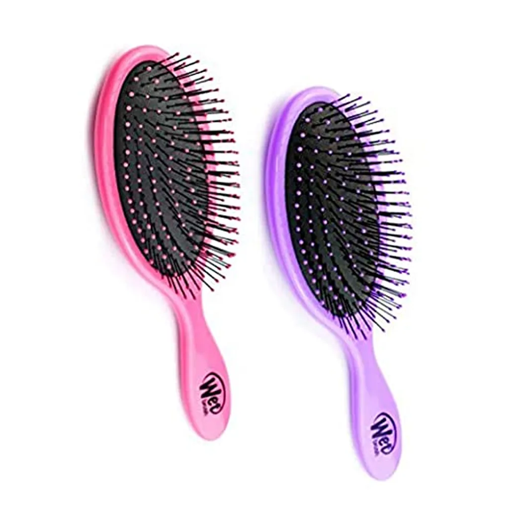
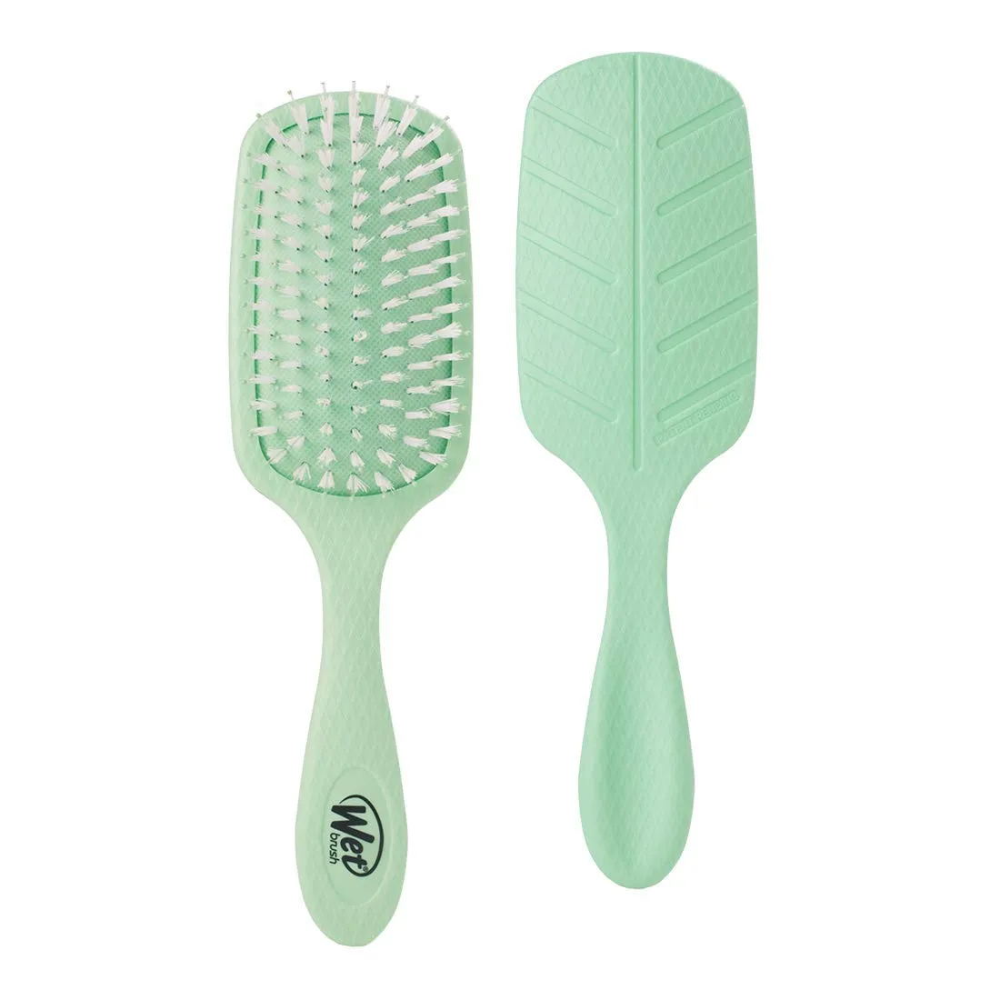
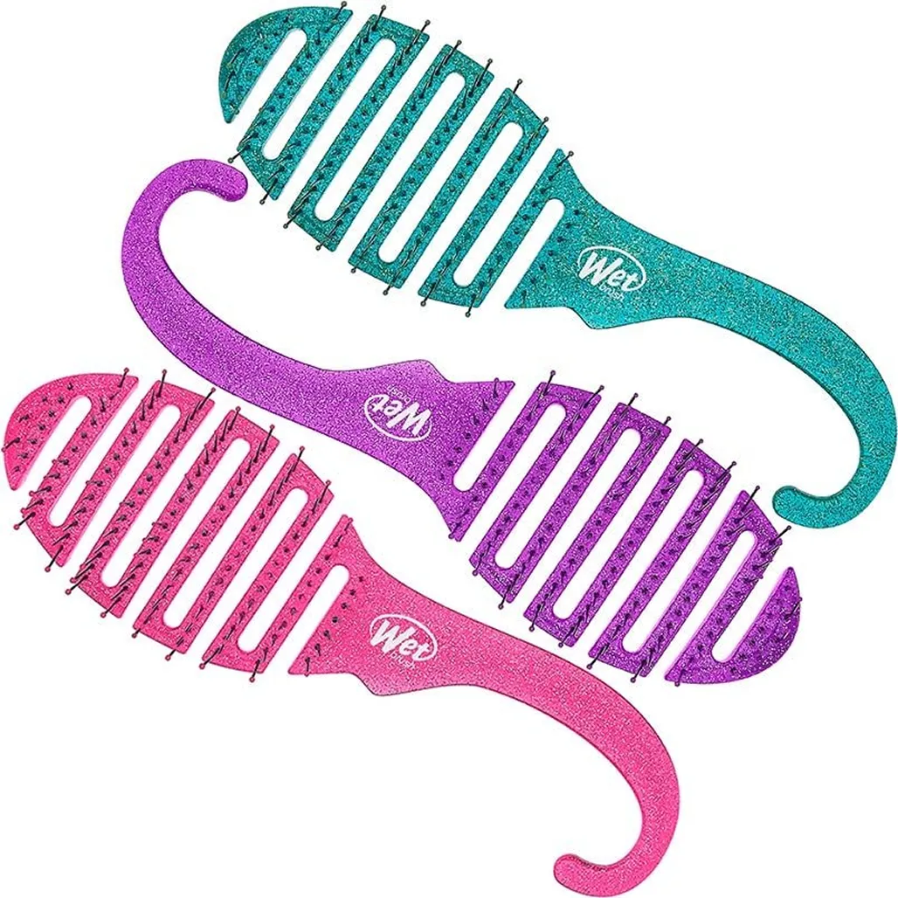
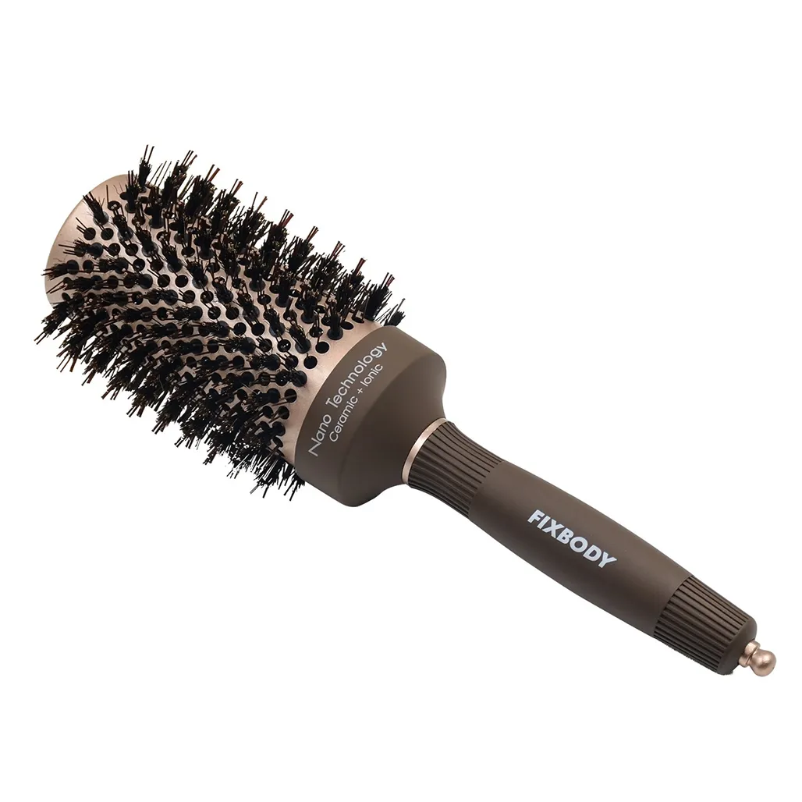

Keeping your crowning glory looking its finest requires the correct type of hairbrush. With so many options available, selecting the right one can be confusing. A hairbrush for routine brushing should be selected based on the texture and length of your hair.
There are also specific brushes that can be used when styling hair. Knowing what options are available will narrow your search when shopping for your next hairbrush.
Hairbrushes are available in a variety of designs. The bristles on each type of brush differ in their arrangement, length, stiffness, number, and the materials from which they are made. Hairbrush bristles can be synthetic, boar bristle, metal, or wooden.
Knowing your hair type and any specific needs are the most important factors when choosing a hairbrush. Specific hair conditions like thinning hair or extremely damaged hair may need special care. Selecting a brush that will not only order the hair but also gently stimulate the scalp is essential.
Many of us remember our mothers dragging a brush painfully through our manes before school when we were kids. Fortunately, new materials and designs are now available that is gentle enough even for a baby’s fine hair.
Types Of Brushes For Hair
Detangler Hairbrushes

Recommended Hair Types:
All, especially medium to long hair.
What is a Detangler Hairbrush Used for?
A good detangling brush is a must-have for everyone who has medium to long hair. These versatile brushes have thin, flexible bristles that gently separate tangled hair while brushing. Detangling brushes work well to tame children’s hair painlessly.
They can also be used on wet hair with a conditioner to remove knots after washing.
Wet Hairbrushes

Recommended Hair Types:
All
What is a Wet Hairbrush Used for?
A wet hairbrush is specifically for use on wet hair. It often has the same features as a detangling brush which is used as a wet brush. The bristles are flexible and soft so that hair is gently unknotted while it massages the scalp.
During swimming or washing, long hair often becomes more tangled than usual. While it is wet, hair is more prone to damage or breakage, so it is essential to use a fine and soft hairbrush that won’t rip out clumps when it encounters a tangle.
Wet brushes are designed so that they will remain gentle even if you accidentally brush a little too hard.
Shower Hairbrushes

Recommended Hair Types:
All
What is a Shower Hairbrush Used for?
Shower hairbrushes are usually similar to hairbrushes designed for use on wet hair. Its main defining characteristic is that it features a hanging hook that makes it handy to keep in the shower. The bristles are highly flexible to reduce hair breakage and split ends while hair is wet. The brush will gently loosen knots without pulling or breaking hair.
Shower hair brushes are designed with ergonomically designed grips that can be held securely while showering. This type of hairbrush is lightweight and vented so that it dries quickly after each use.
A cushion hairbrush has bristles set in a rubber cushion base. The bristles are made of ball-tipped nylon, plastic, or wire is a firm yet flexible option to tame even the most stubborn hair types.
The soft rubber base provides cushioning so that you don’t apply too much pressure to your sensitive scalp, but at the same time, allow the stiff bristles to stimulate the hair follicles.
Cushion hairbrushes are especially recommended for people with frizzy hair because the bristles are strong enough to move between the hair all the way to the scalp. They can also be used by those who frequently use hair styling products or struggle with dandruff.
Cushion brushes will effectively brush through all the layers of hair and make the hair appear cleaner after being brushed.
Thermal Hairbrushes

Recommended Hair Types:
Anyone who blowdries their hair, especially people straightening, curling, blowdrying normal or thick hair, straight or curly, medium to long hair.
What is a Thermal Hairbrush Used for?
Thermal hairbrushes have a round barrel that quickly diffuses warm air through the brush and allows hair to dry faster while blowdrying. The barrels of thermal brushes are made of materials like ceramic, titanium, or tourmaline. These quickly spread the heat from the hairdryer evenly through to all parts of the hair.
Thermal brushes come in different sizes. The thinner ones are perfect for short styles where you want to lift each group of hair before drying to create height. Thermal brushes with a larger circumference work well to add volume to long hair while blowdrying.
Using a thermal brush will speed up the amount of time required to style hair while blowdrying.